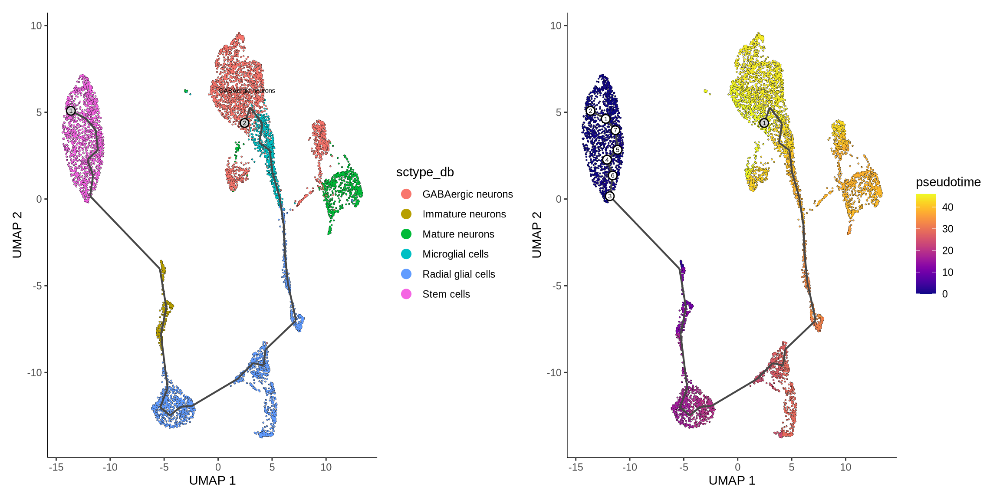
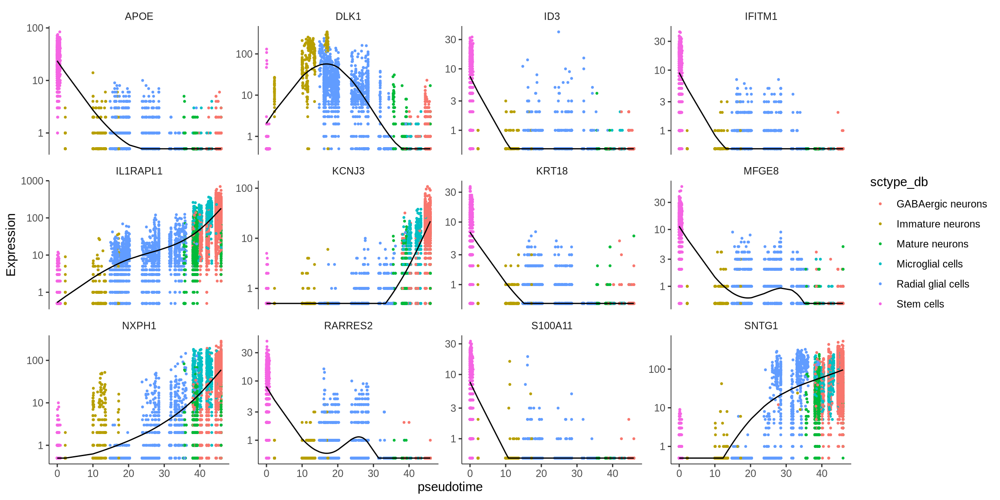
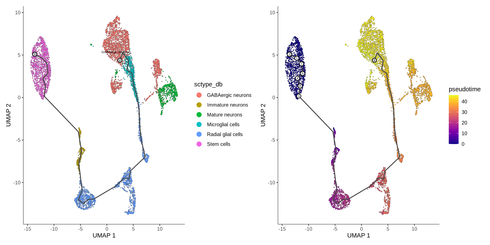
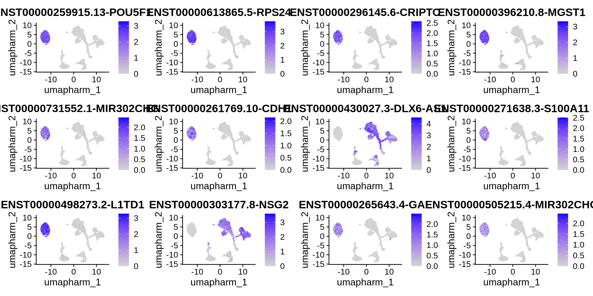

Chapter 10 Trajectory analysis
Trajectory analysis is a powerful tool in single-cell RNA-seq allowing us to track how cells transition between different states over time, rather than simply classifying them into discrete clusters. This approach is particularly useful for studying dynamic processes such as cellular differentiation, cell cycle progression, or disease progression. One of the key advantages of trajectory analysis is the ability to identify genes or (in the case of long read data) isoforms whose expression patterns are correlated with pseudotime
In our example dataset we are interested in looking at genes or isoforms that change as a function of pseudotime as this will highlight impor features that control stem cell to neuronal differentiation. In the bellow code block is the perform_trajectory_analysis function which uses monocle3 (Trapnell et al., 2014) to learn the trajectory and order the cells by pseudotime. We also provide an optional mode to to identify gene or isoforms that change with pseudotime. 6
Code
perform_trajectory_analysis <- function(seurat_obj, assay, prefix, cluster_name="harm_cluster",
root_cells = NULL, cores = 8, order_features_by_pseudotime = FALSE, number_of_features = 500) {
library(monocle3)
library(SeuratWrappers)
# Step 1: Subset and Remove RNA Assay
DefaultAssay(seurat_obj) <- assay
seurat_obj <- JoinLayers(seurat_obj)
# Step 2: Convert to Monocle cell_data_set object
cds <- as.cell_data_set(seurat_obj)
# Add gene_short_name to feature data (gene metadata)
fData(cds)$gene_short_name <- rownames(fData(cds))
# Estimate size factors
cds <- estimate_size_factors(cds)
# Step 3: Assign cluster info and UMAP coordinates
# Partitions
recreate_partition <- as.factor(rep(1, length(colnames(seurat_obj))))
names(recreate_partition) <- colnames(seurat_obj)
cds@clusters$UMAP$partitions <- recreate_partition
# Clustering information from Seurat
cds@clusters$UMAP$clusters <- seurat_obj@meta.data[["orig.ident"]]
# UMAP embeddings from Seurat
cds@int_colData@listData$reducedDims$UMAP <- seurat_obj@reductions$umap.harm@cell.embeddings
# Plot before trajectory
cluster_before_trajectory <- plot_cells(cds, color_cells_by = 'orig.ident') +
theme(legend.position = "right")
# Save plot
#print(cluster_before_trajectory)
# Step 4: Learn trajectory graph
cds <- learn_graph(cds, use_partition = FALSE, close_loop = FALSE)
# Plot learned trajectory
plot_trajectory <- plot_cells(cds, color_cells_by = cluster_name) +
theme(legend.position = "right")
# Step 5: Order cells in pseudotime
cds <- order_cells(cds, reduction_method = 'UMAP', root_cells = root_cells)
# Plot pseudotime
p_pseudotime <- plot_cells(cds, color_cells_by = 'pseudotime') +
theme(legend.position = "right")
# plot
print(plot_trajectory | p_pseudotime)
# Save pseudotime to Seurat object
seurat_obj$pseudotime <- pseudotime(cds)
if (order_features_by_pseudotime == TRUE) {
# Step 6: Finding genes that change as a function of pseudotime
# Find the X most variable genes
seurat_obj <- FindVariableFeatures(seurat_obj, selection.method = "vst", nfeatures = number_of_features)
# Extract the top n variable gene names
top_variable_genes <- VariableFeatures(seurat_obj)
cds_subset <- cds[top_variable_genes, ]
deg_results <- graph_test(cds_subset, neighbor_graph = 'principal_graph', cores = cores)
# Filter for significant genes
MI_sig <- deg_results %>%
filter(q_value < 0.01, morans_I > 0.5, status == 'OK') %>%
arrange(q_value)
# Save significant genes
write.csv(MI_sig, paste0(prefix, "_sig_genes_pseudotime.csv"))
# Plot top genes
top_genes <- MI_sig %>%
arrange(desc(morans_I)) %>%
head(12)
#print plot
print(FeaturePlot(seurat_obj, features = top_genes$gene_short_name, reduction ="umap.harm"))
# Another plot for top 16 fetautes DE acrose pseudotime
my_genes <- row.names(subset(fData(cds_subset), gene_short_name %in% top_genes$gene_short_name))
#my_genes <- row.names(subset(fData(cds), gene_short_name %in% c("DLK1","GRIA2","GRIN2B", "VIM", "PKM", "GAD1", "DCX", "POU5F1", "HOPX")))
cds_top_genes <- cds_subset[my_genes,]
monocle_plot <- monocle3::plot_genes_in_pseudotime(cds = cds_top_genes, min_expr = 0.5, cell_size = 0.5,
nrow = NULL, ncol = 4, panel_order = NULL,
label_by_short_name = TRUE, color_cells_by = cluster_name)
print(monocle_plot)
}
# Save the Seurat object with pseudotime info
#saveRDS(seurat_obj, file = paste0(prefix, "_seurat_with_pseudotime.rds"))
}From this analysis, we observe a well-defined trajectory that transitions from stem cells through immature neurons (likely neural progenitor cells) to radial glial cells, and finally toward more mature neuronal subtypes. This trajectory aligns well with known biological processes, supporting its validity.
Given this biologically meaningful trajectory, we examined genes that exhibit expression changes along pseudotime. Below are 12 top hits, identified based on the number of features tested, showing significant correlations between expression and trajectory progression. These genes may serve as markers for specific cell clusters or be differentially expressed based on other testing methods. We have visualized these results using both a feature plot and a Monocle3 dot plot.
Notes:
- Add labelles for figures
- correct figure size.
- Add reduction param
- work out the empty space
Code
perform_trajectory_analysis(seurat_obj = obj, "RNA", prefix = "Multi-sample_tutorial",
cluster_name="sctype_db", root_cells = NULL, cores = 8, order_features_by_pseudotime = TRUE, number_of_features = 500)
## | | 0%, ETA NA | | 0%, ETA 00:51 |= | 0%, ETA 00:27 |= | 1%, ETA 00:19 |= | 1%, ETA 00:15 |= | 1%, ETA 00:13 |== | 1%, ETA 00:11 |== | 1%, ETA 00:10 |== | 2%, ETA 00:09 |== | 2%, ETA 00:08 |=== | 2%, ETA 00:08 |=== | 2%, ETA 00:07 |=== | 2%, ETA 00:07 |=== | 3%, ETA 00:07 |==== | 3%, ETA 00:06 |==== | 3%, ETA 00:06 |==== | 3%, ETA 00:06 |==== | 3%, ETA 00:05 |===== | 4%, ETA 00:05 |===== | 4%, ETA 00:05 |===== | 4%, ETA 00:05 |====== | 4%, ETA 00:05 |====== | 4%, ETA 00:04 |====== | 5%, ETA 00:04 |====== | 5%, ETA 00:04 |======= | 5%, ETA 00:04 |======= | 5%, ETA 00:04 |======= | 5%, ETA 00:04 |======= | 6%, ETA 00:04 |======== | 6%, ETA 00:04 |======== | 6%, ETA 00:04 |======== | 6%, ETA 00:03 |======== | 6%, ETA 00:03 |========= | 7%, ETA 00:03 |========= | 7%, ETA 00:03 |========= | 7%, ETA 00:03 |========= | 7%, ETA 00:03 |========== | 7%, ETA 00:03 |========== | 8%, ETA 00:03 |============ | 9%, ETA 00:03 |============ | 9%, ETA 00:03 |============ | 9%, ETA 00:03 |============ | 9%, ETA 00:03 |============= | 10%, ETA 00:03 |============== | 11%, ETA 00:02 |============== | 11%, ETA 00:02 |============== | 11%, ETA 00:02 |=============== | 11%, ETA 00:02 |=============== | 11%, ETA 00:02 |=============== | 12%, ETA 00:02 |=============== | 12%, ETA 00:02 |================ | 12%, ETA 00:02 |================ | 12%, ETA 00:02 |================ | 12%, ETA 00:02 |================= | 13%, ETA 00:02 |================= | 13%, ETA 00:02 |================= | 13%, ETA 00:02 |================= | 13%, ETA 00:02 |================== | 13%, ETA 00:02 |================== | 14%, ETA 00:02 |================== | 14%, ETA 00:02 |================== | 14%, ETA 00:02 |=================== | 14%, ETA 00:02 |=================== | 14%, ETA 00:02 |=================== | 15%, ETA 00:02 |=================== | 15%, ETA 00:02 |==================== | 15%, ETA 00:02 |==================== | 15%, ETA 00:02 |==================== | 15%, ETA 00:02 |==================== | 16%, ETA 00:02 |===================== | 16%, ETA 00:02 |===================== | 16%, ETA 00:02 |===================== | 16%, ETA 00:02 |===================== | 16%, ETA 00:02 |====================== | 17%, ETA 00:02 |====================== | 17%, ETA 00:02 |====================== | 17%, ETA 00:02 |======================= | 17%, ETA 00:02 |======================= | 17%, ETA 00:02 |======================= | 18%, ETA 00:02 |======================= | 18%, ETA 00:02 |======================== | 18%, ETA 00:02 |======================== | 18%, ETA 00:02 |======================== | 18%, ETA 00:02 |======================== | 19%, ETA 00:02 |========================= | 19%, ETA 00:02 |========================= | 19%, ETA 00:02 |========================= | 19%, ETA 00:02 |========================= | 19%, ETA 00:02 |========================== | 20%, ETA 00:02 |========================== | 20%, ETA 00:02 |========================== | 20%, ETA 00:02 |========================== | 20%, ETA 00:02 |=========================== | 20%, ETA 00:02 |=========================== | 21%, ETA 00:02 |=========================== | 21%, ETA 00:02 |============================ | 21%, ETA 00:02 |============================ | 21%, ETA 00:01 |============================ | 21%, ETA 00:01 |============================ | 22%, ETA 00:01 |============================= | 22%, ETA 00:01 |============================= | 22%, ETA 00:01 |============================= | 22%, ETA 00:01 |============================= | 22%, ETA 00:01 |============================== | 23%, ETA 00:01 |============================== | 23%, ETA 00:01 |============================== | 23%, ETA 00:01 |============================== | 23%, ETA 00:01 |=============================== | 23%, ETA 00:01 |=============================== | 24%, ETA 00:01 |=============================== | 24%, ETA 00:01 |=============================== | 24%, ETA 00:01 |================================ | 24%, ETA 00:01 |================================ | 24%, ETA 00:01 |================================ | 25%, ETA 00:01 |================================ | 25%, ETA 00:01 |================================= | 25%, ETA 00:01 |================================= | 25%, ETA 00:01 |================================= | 25%, ETA 00:01 |================================== | 26%, ETA 00:01 |================================== | 26%, ETA 00:01 |================================== | 26%, ETA 00:01 |================================== | 26%, ETA 00:01 |=================================== | 26%, ETA 00:01 |=================================== | 27%, ETA 00:01 |=================================== | 27%, ETA 00:01 |=================================== | 27%, ETA 00:01 |==================================== | 27%, ETA 00:01 |==================================== | 27%, ETA 00:01 |==================================== | 28%, ETA 00:01 |==================================== | 28%, ETA 00:01 |===================================== | 28%, ETA 00:01 |===================================== | 28%, ETA 00:01 |===================================== | 28%, ETA 00:01 |===================================== | 29%, ETA 00:01 |====================================== | 29%, ETA 00:01 |====================================== | 29%, ETA 00:01 |====================================== | 29%, ETA 00:01 |======================================= | 29%, ETA 00:01 |======================================= | 30%, ETA 00:01 |======================================= | 30%, ETA 00:01 |======================================= | 30%, ETA 00:01 |======================================== | 30%, ETA 00:01 |======================================== | 30%, ETA 00:01 |======================================== | 31%, ETA 00:01 |======================================== | 31%, ETA 00:01 |========================================= | 31%, ETA 00:01 |========================================= | 31%, ETA 00:01 |========================================= | 31%, ETA 00:01 |========================================= | 32%, ETA 00:01 |========================================== | 32%, ETA 00:01 |========================================== | 32%, ETA 00:01 |========================================== | 32%, ETA 00:01 |========================================== | 32%, ETA 00:01 |=========================================== | 33%, ETA 00:01 |=========================================== | 33%, ETA 00:01 |=========================================== | 33%, ETA 00:01 |=========================================== | 33%, ETA 00:01 |============================================ | 33%, ETA 00:01 |============================================ | 34%, ETA 00:01 |============================================ | 34%, ETA 00:01 |============================================= | 34%, ETA 00:01 |============================================= | 34%, ETA 00:01 |============================================= | 34%, ETA 00:01 |============================================= | 35%, ETA 00:01 |============================================== | 35%, ETA 00:01 |============================================== | 35%, ETA 00:01 |============================================== | 35%, ETA 00:01 |============================================== | 35%, ETA 00:01 |=============================================== | 36%, ETA 00:01 |=============================================== | 36%, ETA 00:01 |=============================================== | 36%, ETA 00:01 |=============================================== | 36%, ETA 00:01 |================================================ | 36%, ETA 00:01 |================================================ | 37%, ETA 00:01 |================================================ | 37%, ETA 00:01 |================================================ | 37%, ETA 00:01 |================================================= | 37%, ETA 00:01 |================================================= | 37%, ETA 00:01 |================================================= | 38%, ETA 00:01 |================================================== | 38%, ETA 00:01 |================================================== | 38%, ETA 00:01 |================================================== | 38%, ETA 00:01 |================================================== | 38%, ETA 00:01 |=================================================== | 39%, ETA 00:01 |=================================================== | 39%, ETA 00:01 |=================================================== | 39%, ETA 00:01 |=================================================== | 39%, ETA 00:01 |==================================================== | 39%, ETA 00:01 |==================================================== | 40%, ETA 00:01 |==================================================== | 40%, ETA 00:01 |==================================================== | 40%, ETA 00:01 |===================================================== | 40%, ETA 00:01 |===================================================== | 40%, ETA 00:01 |===================================================== | 41%, ETA 00:01 |===================================================== | 41%, ETA 00:01 |====================================================== | 41%, ETA 00:01 |====================================================== | 41%, ETA 00:01 |====================================================== | 41%, ETA 00:01 |====================================================== | 42%, ETA 00:01 |======================================================= | 42%, ETA 00:01 |======================================================= | 42%, ETA 00:01 |======================================================= | 42%, ETA 00:01 |======================================================== | 42%, ETA 00:01 |======================================================== | 43%, ETA 00:01 |======================================================== | 43%, ETA 00:01 |======================================================== | 43%, ETA 00:01 |========================================================= | 43%, ETA 00:01 |========================================================= | 43%, ETA 00:01 |========================================================= | 44%, ETA 00:01 |========================================================= | 44%, ETA 00:01 |========================================================== | 44%, ETA 00:01 |========================================================== | 44%, ETA 00:01 |========================================================== | 44%, ETA 00:01 |========================================================== | 45%, ETA 00:01 |=========================================================== | 45%, ETA 00:01 |=========================================================== | 45%, ETA 00:01 |=========================================================== | 45%, ETA 00:01 |=========================================================== | 45%, ETA 00:01 |============================================================ | 46%, ETA 00:01 |============================================================ | 46%, ETA 00:01 |============================================================ | 46%, ETA 00:01 |============================================================= | 46%, ETA 00:01 |============================================================= | 46%, ETA 00:01 |============================================================= | 47%, ETA 00:01 |============================================================= | 47%, ETA 00:01 |============================================================== | 47%, ETA 00:01 |============================================================== | 47%, ETA 00:01 |============================================================== | 47%, ETA 00:01 |============================================================== | 48%, ETA 00:01 |=============================================================== | 48%, ETA 00:01 |=============================================================== | 48%, ETA 00:01 |=============================================================== | 48%, ETA 00:01 |=============================================================== | 48%, ETA 00:01 |================================================================ | 49%, ETA 00:01 |================================================================ | 49%, ETA 00:01 |================================================================ | 49%, ETA 00:01 |================================================================ | 49%, ETA 00:01 |================================================================= | 49%, ETA 00:01 |================================================================= | 50%, ETA 00:01 |================================================================= | 50%, ETA 00:01 |================================================================== | 50%, ETA 00:01 |================================================================== | 50%, ETA 00:01 |================================================================== | 50%, ETA 00:01 |================================================================== | 51%, ETA 00:01 |=================================================================== | 51%, ETA 00:01 |=================================================================== | 51%, ETA 00:01 |=================================================================== | 51%, ETA 00:01 |=================================================================== | 51%, ETA 00:01 |==================================================================== | 52%, ETA 00:01 |==================================================================== | 52%, ETA 00:01 |==================================================================== | 52%, ETA 00:01 |==================================================================== | 52%, ETA 00:01 |===================================================================== | 52%, ETA 00:01 |===================================================================== | 53%, ETA 00:01 |===================================================================== | 53%, ETA 00:01 |===================================================================== | 53%, ETA 00:01 |====================================================================== | 53%, ETA 00:01 |====================================================================== | 53%, ETA 00:01 |====================================================================== | 54%, ETA 00:01 |====================================================================== | 54%, ETA 00:01 |======================================================================= | 54%, ETA 00:01 |======================================================================= | 54%, ETA 00:01 |======================================================================= | 54%, ETA 00:01 |======================================================================== | 55%, ETA 00:01 |======================================================================== | 55%, ETA 00:01 |======================================================================== | 55%, ETA 00:01 |======================================================================== | 55%, ETA 00:01 |========================================================================= | 55%, ETA 00:01 |========================================================================= | 56%, ETA 00:01 |========================================================================= | 56%, ETA 00:01 |========================================================================= | 56%, ETA 00:01 |========================================================================== | 56%, ETA 00:01 |========================================================================== | 56%, ETA 00:01 |========================================================================== | 57%, ETA 00:01 |========================================================================== | 57%, ETA 00:01 |=========================================================================== | 57%, ETA 00:01 |=========================================================================== | 57%, ETA 00:01 |=========================================================================== | 57%, ETA 00:01 |=========================================================================== | 58%, ETA 00:01 |============================================================================ | 58%, ETA 00:01 |============================================================================ | 58%, ETA 00:01 |============================================================================ | 58%, ETA 00:01 |============================================================================= | 58%, ETA 00:01 |============================================================================= | 59%, ETA 00:01 |============================================================================= | 59%, ETA 00:01 |============================================================================= | 59%, ETA 00:01 |============================================================================== | 59%, ETA 00:01 |============================================================================== | 59%, ETA 00:01 |============================================================================== | 60%, ETA 00:01 |============================================================================== | 60%, ETA 00:01 |=============================================================================== | 60%, ETA 00:00 |=============================================================================== | 60%, ETA 00:00 |=============================================================================== | 60%, ETA 00:00 |=============================================================================== | 61%, ETA 00:00 |================================================================================ | 61%, ETA 00:00 |================================================================================ | 61%, ETA 00:00 |================================================================================ | 61%, ETA 00:00 |================================================================================ | 61%, ETA 00:00 |================================================================================= | 62%, ETA 00:00 |================================================================================= | 62%, ETA 00:00 |================================================================================= | 62%, ETA 00:00 |================================================================================= | 62%, ETA 00:00 |================================================================================== | 62%, ETA 00:00 |================================================================================== | 63%, ETA 00:00 |================================================================================== | 63%, ETA 00:00 |=================================================================================== | 63%, ETA 00:00 |=================================================================================== | 63%, ETA 00:00 |=================================================================================== | 63%, ETA 00:00 |=================================================================================== | 64%, ETA 00:00 |==================================================================================== | 64%, ETA 00:00 |==================================================================================== | 64%, ETA 00:00 |==================================================================================== | 64%, ETA 00:00 |==================================================================================== | 64%, ETA 00:00 |===================================================================================== | 65%, ETA 00:00 |===================================================================================== | 65%, ETA 00:00 |===================================================================================== | 65%, ETA 00:00 |===================================================================================== | 65%, ETA 00:00 |====================================================================================== | 65%, ETA 00:00 |====================================================================================== | 66%, ETA 00:00 |====================================================================================== | 66%, ETA 00:00 |====================================================================================== | 66%, ETA 00:00 |======================================================================================= | 66%, ETA 00:00 |======================================================================================= | 66%, ETA 00:00 |======================================================================================= | 67%, ETA 00:00 |======================================================================================== | 67%, ETA 00:00 |======================================================================================== | 67%, ETA 00:00 |======================================================================================== | 67%, ETA 00:00 |======================================================================================== | 67%, ETA 00:00 |========================================================================================= | 68%, ETA 00:00 |========================================================================================= | 68%, ETA 00:00 |========================================================================================= | 68%, ETA 00:00 |========================================================================================= | 68%, ETA 00:00 |========================================================================================== | 68%, ETA 00:00 |========================================================================================== | 69%, ETA 00:00 |========================================================================================== | 69%, ETA 00:00 |========================================================================================== | 69%, ETA 00:00 |=========================================================================================== | 69%, ETA 00:00 |=========================================================================================== | 69%, ETA 00:00 |=========================================================================================== | 70%, ETA 00:00 |=========================================================================================== | 70%, ETA 00:00 |============================================================================================ | 70%, ETA 00:00 |============================================================================================ | 70%, ETA 00:00 |============================================================================================ | 70%, ETA 00:00 |============================================================================================ | 71%, ETA 00:00 |============================================================================================= | 71%, ETA 00:00 |============================================================================================= | 71%, ETA 00:00 |============================================================================================= | 71%, ETA 00:00 |============================================================================================== | 71%, ETA 00:00 |============================================================================================== | 72%, ETA 00:00 |============================================================================================== | 72%, ETA 00:00 |============================================================================================== | 72%, ETA 00:00 |=============================================================================================== | 72%, ETA 00:00 |=============================================================================================== | 72%, ETA 00:00 |=============================================================================================== | 73%, ETA 00:00 |=============================================================================================== | 73%, ETA 00:00 |================================================================================================ | 73%, ETA 00:00 |================================================================================================ | 73%, ETA 00:00 |================================================================================================ | 73%, ETA 00:00 |================================================================================================ | 74%, ETA 00:00 |================================================================================================= | 74%, ETA 00:00 |================================================================================================= | 74%, ETA 00:00 |================================================================================================= | 74%, ETA 00:00 |================================================================================================= | 74%, ETA 00:00 |================================================================================================== | 75%, ETA 00:00 |================================================================================================== | 75%, ETA 00:00 |================================================================================================== | 75%, ETA 00:00 |=================================================================================================== | 75%, ETA 00:00 |=================================================================================================== | 75%, ETA 00:00 |=================================================================================================== | 76%, ETA 00:00 |=================================================================================================== | 76%, ETA 00:00 |==================================================================================================== | 76%, ETA 00:00 |==================================================================================================== | 76%, ETA 00:00 |==================================================================================================== | 76%, ETA 00:00 |==================================================================================================== | 77%, ETA 00:00 |===================================================================================================== | 77%, ETA 00:00 |===================================================================================================== | 77%, ETA 00:00 |===================================================================================================== | 77%, ETA 00:00 |===================================================================================================== | 77%, ETA 00:00 |====================================================================================================== | 78%, ETA 00:00 |====================================================================================================== | 78%, ETA 00:00 |====================================================================================================== | 78%, ETA 00:00 |====================================================================================================== | 78%, ETA 00:00 |======================================================================================================= | 78%, ETA 00:00 |======================================================================================================= | 79%, ETA 00:00 |======================================================================================================= | 79%, ETA 00:00 |======================================================================================================= | 79%, ETA 00:00 |======================================================================================================== | 79%, ETA 00:00 |======================================================================================================== | 79%, ETA 00:00 |======================================================================================================== | 80%, ETA 00:00 |========================================================================================================= | 80%, ETA 00:00 |========================================================================================================= | 80%, ETA 00:00 |========================================================================================================= | 80%, ETA 00:00 |========================================================================================================= | 80%, ETA 00:00 |========================================================================================================== | 81%, ETA 00:00 |========================================================================================================== | 81%, ETA 00:00 |========================================================================================================== | 81%, ETA 00:00 |========================================================================================================== | 81%, ETA 00:00 |=========================================================================================================== | 81%, ETA 00:00 |=========================================================================================================== | 82%, ETA 00:00 |=========================================================================================================== | 82%, ETA 00:00 |=========================================================================================================== | 82%, ETA 00:00 |============================================================================================================ | 82%, ETA 00:00 |============================================================================================================ | 82%, ETA 00:00 |============================================================================================================ | 83%, ETA 00:00 |============================================================================================================ | 83%, ETA 00:00 |============================================================================================================= | 83%, ETA 00:00 |============================================================================================================= | 83%, ETA 00:00 |============================================================================================================= | 83%, ETA 00:00 |============================================================================================================== | 84%, ETA 00:00 |============================================================================================================== | 84%, ETA 00:00 |============================================================================================================== | 84%, ETA 00:00 |============================================================================================================== | 84%, ETA 00:00 |=============================================================================================================== | 84%, ETA 00:00 |=============================================================================================================== | 85%, ETA 00:00 |=============================================================================================================== | 85%, ETA 00:00 |=============================================================================================================== | 85%, ETA 00:00 |================================================================================================================ | 85%, ETA 00:00 |================================================================================================================ | 85%, ETA 00:00 |================================================================================================================ | 86%, ETA 00:00 |================================================================================================================ | 86%, ETA 00:00 |================================================================================================================= | 86%, ETA 00:00 |================================================================================================================= | 86%, ETA 00:00 |================================================================================================================= | 86%, ETA 00:00 |================================================================================================================= | 87%, ETA 00:00 |================================================================================================================== | 87%, ETA 00:00 |================================================================================================================== | 87%, ETA 00:00 |================================================================================================================== | 87%, ETA 00:00 |================================================================================================================== | 87%, ETA 00:00 |=================================================================================================================== | 88%, ETA 00:00 |=================================================================================================================== | 88%, ETA 00:00 |=================================================================================================================== | 88%, ETA 00:00 |==================================================================================================================== | 88%, ETA 00:00 |==================================================================================================================== | 88%, ETA 00:00 |==================================================================================================================== | 89%, ETA 00:00 |==================================================================================================================== | 89%, ETA 00:00 |===================================================================================================================== | 89%, ETA 00:00 |===================================================================================================================== | 89%, ETA 00:00 |===================================================================================================================== | 89%, ETA 00:00 |===================================================================================================================== | 90%, ETA 00:00 |====================================================================================================================== | 90%, ETA 00:00 |====================================================================================================================== | 90%, ETA 00:00 |====================================================================================================================== | 90%, ETA 00:00 |====================================================================================================================== | 90%, ETA 00:00 |======================================================================================================================= | 91%, ETA 00:00 |======================================================================================================================= | 91%, ETA 00:00 |======================================================================================================================= | 91%, ETA 00:00 |======================================================================================================================= | 91%, ETA 00:00 |======================================================================================================================== | 91%, ETA 00:00 |======================================================================================================================== | 92%, ETA 00:00 |======================================================================================================================== | 92%, ETA 00:00 |========================================================================================================================= | 92%, ETA 00:00 |========================================================================================================================= | 92%, ETA 00:00 |========================================================================================================================= | 92%, ETA 00:00 |========================================================================================================================= | 93%, ETA 00:00 |========================================================================================================================== | 93%, ETA 00:00 |========================================================================================================================== | 93%, ETA 00:00 |========================================================================================================================== | 93%, ETA 00:00 |========================================================================================================================== | 93%, ETA 00:00 |=========================================================================================================================== | 94%, ETA 00:00 |=========================================================================================================================== | 94%, ETA 00:00 |=========================================================================================================================== | 94%, ETA 00:00 |=========================================================================================================================== | 94%, ETA 00:00 |============================================================================================================================ | 94%, ETA 00:00 |============================================================================================================================ | 95%, ETA 00:00 |============================================================================================================================ | 95%, ETA 00:00 |============================================================================================================================ | 95%, ETA 00:00 |============================================================================================================================= | 95%, ETA 00:00 |============================================================================================================================= | 95%, ETA 00:00 |============================================================================================================================= | 96%, ETA 00:00 |============================================================================================================================= | 96%, ETA 00:00 |============================================================================================================================== | 96%, ETA 00:00 |============================================================================================================================== | 96%, ETA 00:00 |============================================================================================================================== | 96%, ETA 00:00 |=============================================================================================================================== | 97%, ETA 00:00 |=============================================================================================================================== | 97%, ETA 00:00 |=============================================================================================================================== | 97%, ETA 00:00 |=============================================================================================================================== | 97%, ETA 00:00 |================================================================================================================================ | 97%, ETA 00:00 |================================================================================================================================ | 98%, ETA 00:00 |================================================================================================================================ | 98%, ETA 00:00 |================================================================================================================================ | 98%, ETA 00:00 |================================================================================================================================= | 98%, ETA 00:00 |================================================================================================================================= | 98%, ETA 00:00 |================================================================================================================================= | 99%, ETA 00:00 |================================================================================================================================= | 99%, ETA 00:00 |================================================================================================================================== | 99%, ETA 00:00 |================================================================================================================================== | 99%, ETA 00:00 |================================================================================================================================== | 99%, ETA 00:00 |================================================================================================================================== | 100%, ETA 00:00 |===================================================================================================================================| 100%, ETA 00:00 |===============================================================================================================================| 100%, Elapsed 00:01
The same analysis can be performed at the isoform level by setting assay = "iso". This allows for the identification of differentially expressed isoforms along the trajectory. Users can also plot trajectories based on isoform-level clustering. If choosing this approach, ensure that the isoform-level data is properly integrated, and modify the function to specify the appropriate dimensional reduction method for trajectory learning.
Code
perform_trajectory_analysis(seurat_obj = obj, assay="iso", prefix = "iso_Multi-sample_tutorial",
cluster_name="sctype_db", root_cells = NULL, cores = 8, order_features_by_pseudotime = TRUE, number_of_features = 1000)
## | | 0%, ETA NA | | 0%, ETA 01:48 | | 0%, ETA 00:57 | | 0%, ETA 00:40 |= | 0%, ETA 00:31 |= | 0%, ETA 00:26 |= | 1%, ETA 00:23 |= | 1%, ETA 00:20 |= | 1%, ETA 00:19 |= | 1%, ETA 00:17 |= | 1%, ETA 00:16 |= | 1%, ETA 00:15 |== | 1%, ETA 00:14 |== | 1%, ETA 00:14 |== | 1%, ETA 00:13 |== | 2%, ETA 00:12 |== | 2%, ETA 00:12 |== | 2%, ETA 00:11 |== | 2%, ETA 00:11 |== | 2%, ETA 00:10 |=== | 2%, ETA 00:10 |=== | 2%, ETA 00:10 |=== | 2%, ETA 00:09 |=== | 2%, ETA 00:09 |=== | 2%, ETA 00:09 |=== | 2%, ETA 00:09 |=== | 3%, ETA 00:08 |==== | 3%, ETA 00:08 |==== | 3%, ETA 00:08 |==== | 3%, ETA 00:08 |==== | 3%, ETA 00:08 |==== | 3%, ETA 00:07 |==== | 3%, ETA 00:07 |==== | 3%, ETA 00:07 |==== | 3%, ETA 00:07 |===== | 4%, ETA 00:07 |===== | 4%, ETA 00:07 |===== | 4%, ETA 00:07 |===== | 4%, ETA 00:07 |===== | 4%, ETA 00:06 |===== | 4%, ETA 00:06 |===== | 4%, ETA 00:06 |====== | 4%, ETA 00:06 |====== | 4%, ETA 00:06 |====== | 4%, ETA 00:06 |====== | 4%, ETA 00:06 |====== | 5%, ETA 00:06 |====== | 5%, ETA 00:06 |====== | 5%, ETA 00:06 |====== | 5%, ETA 00:06 |======= | 5%, ETA 00:05 |======= | 5%, ETA 00:05 |======= | 5%, ETA 00:05 |======= | 5%, ETA 00:05 |======= | 5%, ETA 00:05 |======= | 6%, ETA 00:05 |======= | 6%, ETA 00:05 |======= | 6%, ETA 00:05 |======== | 6%, ETA 00:05 |======== | 6%, ETA 00:05 |======== | 6%, ETA 00:05 |======== | 6%, ETA 00:05 |======== | 6%, ETA 00:05 |======== | 6%, ETA 00:05 |======== | 6%, ETA 00:05 |========= | 6%, ETA 00:05 |========= | 7%, ETA 00:04 |========= | 7%, ETA 00:04 |========= | 7%, ETA 00:04 |========= | 7%, ETA 00:04 |========= | 7%, ETA 00:04 |========= | 7%, ETA 00:04 |========= | 7%, ETA 00:04 |========== | 7%, ETA 00:04 |========== | 7%, ETA 00:04 |========== | 8%, ETA 00:04 |========== | 8%, ETA 00:04 |========== | 8%, ETA 00:04 |========== | 8%, ETA 00:04 |========== | 8%, ETA 00:04 |========== | 8%, ETA 00:04 |=========== | 8%, ETA 00:04 |=========== | 8%, ETA 00:04 |=========== | 8%, ETA 00:04 |=========== | 8%, ETA 00:04 |=========== | 8%, ETA 00:04 |=========== | 9%, ETA 00:04 |=========== | 9%, ETA 00:04 |============ | 9%, ETA 00:04 |============ | 9%, ETA 00:04 |============ | 9%, ETA 00:04 |============ | 9%, ETA 00:04 |============ | 9%, ETA 00:04 |============ | 9%, ETA 00:04 |============ | 9%, ETA 00:04 |============ | 10%, ETA 00:04 |============= | 10%, ETA 00:04 |============= | 10%, ETA 00:04 |============= | 10%, ETA 00:04 |============= | 10%, ETA 00:03 |============= | 10%, ETA 00:03 |============= | 10%, ETA 00:03 |============= | 10%, ETA 00:03 |============= | 10%, ETA 00:03 |============== | 10%, ETA 00:03 |============== | 10%, ETA 00:03 |============== | 11%, ETA 00:03 |============== | 11%, ETA 00:03 |============== | 11%, ETA 00:03 |============== | 11%, ETA 00:03 |============== | 11%, ETA 00:03 |=============== | 11%, ETA 00:03 |=============== | 11%, ETA 00:03 |=============== | 11%, ETA 00:03 |=============== | 11%, ETA 00:03 |=============== | 12%, ETA 00:03 |=============== | 12%, ETA 00:03 |=============== | 12%, ETA 00:03 |=============== | 12%, ETA 00:03 |================ | 12%, ETA 00:03 |================ | 12%, ETA 00:03 |================ | 12%, ETA 00:03 |================ | 12%, ETA 00:03 |================ | 12%, ETA 00:03 |================ | 12%, ETA 00:03 |================ | 12%, ETA 00:03 |================= | 13%, ETA 00:03 |================= | 13%, ETA 00:03 |================= | 13%, ETA 00:03 |================= | 13%, ETA 00:03 |================= | 13%, ETA 00:03 |================= | 13%, ETA 00:03 |================= | 13%, ETA 00:03 |================= | 13%, ETA 00:03 |================== | 13%, ETA 00:03 |================== | 14%, ETA 00:03 |================== | 14%, ETA 00:03 |================== | 14%, ETA 00:03 |================== | 14%, ETA 00:03 |================== | 14%, ETA 00:03 |================== | 14%, ETA 00:03 |================== | 14%, ETA 00:03 |=================== | 14%, ETA 00:03 |=================== | 14%, ETA 00:03 |=================== | 14%, ETA 00:03 |=================== | 14%, ETA 00:03 |=================== | 15%, ETA 00:03 |=================== | 15%, ETA 00:03 |=================== | 15%, ETA 00:03 |==================== | 15%, ETA 00:03 |==================== | 15%, ETA 00:03 |==================== | 15%, ETA 00:03 |==================== | 15%, ETA 00:03 |==================== | 15%, ETA 00:03 |==================== | 15%, ETA 00:03 |==================== | 16%, ETA 00:03 |==================== | 16%, ETA 00:03 |===================== | 16%, ETA 00:03 |===================== | 16%, ETA 00:03 |===================== | 16%, ETA 00:03 |===================== | 16%, ETA 00:03 |===================== | 16%, ETA 00:03 |===================== | 16%, ETA 00:03 |===================== | 16%, ETA 00:03 |===================== | 16%, ETA 00:03 |====================== | 16%, ETA 00:03 |====================== | 17%, ETA 00:02 |====================== | 17%, ETA 00:02 |====================== | 17%, ETA 00:02 |====================== | 17%, ETA 00:02 |====================== | 17%, ETA 00:02 |====================== | 17%, ETA 00:02 |======================= | 17%, ETA 00:02 |======================= | 17%, ETA 00:02 |======================= | 17%, ETA 00:02 |======================= | 18%, ETA 00:02 |======================= | 18%, ETA 00:02 |======================= | 18%, ETA 00:02 |======================= | 18%, ETA 00:02 |======================= | 18%, ETA 00:02 |======================== | 18%, ETA 00:02 |======================== | 18%, ETA 00:02 |======================== | 18%, ETA 00:02 |======================== | 18%, ETA 00:02 |======================== | 18%, ETA 00:02 |======================== | 18%, ETA 00:02 |======================== | 19%, ETA 00:02 |======================== | 19%, ETA 00:02 |========================= | 19%, ETA 00:02 |========================= | 19%, ETA 00:02 |========================= | 19%, ETA 00:02 |========================= | 19%, ETA 00:02 |========================= | 19%, ETA 00:02 |========================= | 19%, ETA 00:02 |========================= | 19%, ETA 00:02 |========================== | 20%, ETA 00:02 |========================== | 20%, ETA 00:02 |========================== | 20%, ETA 00:02 |========================== | 20%, ETA 00:02 |========================== | 20%, ETA 00:02 |========================== | 20%, ETA 00:02 |========================== | 20%, ETA 00:02 |========================== | 20%, ETA 00:02 |=========================== | 20%, ETA 00:02 |=========================== | 20%, ETA 00:02 |=========================== | 20%, ETA 00:02 |=========================== | 21%, ETA 00:02 |=========================== | 21%, ETA 00:02 |=========================== | 21%, ETA 00:02 |=========================== | 21%, ETA 00:02 |============================ | 21%, ETA 00:02 |============================ | 21%, ETA 00:02 |============================ | 21%, ETA 00:02 |============================ | 21%, ETA 00:02 |============================ | 21%, ETA 00:02 |============================ | 22%, ETA 00:02 |============================ | 22%, ETA 00:02 |============================ | 22%, ETA 00:02 |============================= | 22%, ETA 00:02 |============================= | 22%, ETA 00:02 |============================= | 22%, ETA 00:02 |============================= | 22%, ETA 00:02 |============================= | 22%, ETA 00:02 |============================= | 22%, ETA 00:02 |============================= | 22%, ETA 00:02 |============================= | 22%, ETA 00:02 |============================== | 23%, ETA 00:02 |============================== | 23%, ETA 00:02 |============================== | 23%, ETA 00:02 |============================== | 23%, ETA 00:02 |============================== | 23%, ETA 00:02 |============================== | 23%, ETA 00:02 |============================== | 23%, ETA 00:02 |=============================== | 23%, ETA 00:02 |=============================== | 23%, ETA 00:02 |=============================== | 24%, ETA 00:02 |=============================== | 24%, ETA 00:02 |=============================== | 24%, ETA 00:02 |=============================== | 24%, ETA 00:02 |=============================== | 24%, ETA 00:02 |=============================== | 24%, ETA 00:02 |================================ | 24%, ETA 00:02 |================================ | 24%, ETA 00:02 |================================ | 24%, ETA 00:02 |================================ | 24%, ETA 00:02 |================================ | 24%, ETA 00:02 |================================ | 25%, ETA 00:02 |================================ | 25%, ETA 00:02 |================================ | 25%, ETA 00:02 |================================= | 25%, ETA 00:02 |================================= | 25%, ETA 00:02 |================================= | 25%, ETA 00:02 |================================= | 25%, ETA 00:02 |================================= | 25%, ETA 00:02 |================================= | 25%, ETA 00:02 |================================= | 26%, ETA 00:02 |================================== | 26%, ETA 00:02 |================================== | 26%, ETA 00:02 |================================== | 26%, ETA 00:02 |================================== | 26%, ETA 00:02 |================================== | 26%, ETA 00:02 |================================== | 26%, ETA 00:02 |================================== | 26%, ETA 00:02 |================================== | 26%, ETA 00:02 |=================================== | 26%, ETA 00:02 |=================================== | 26%, ETA 00:02 |=================================== | 27%, ETA 00:02 |=================================== | 27%, ETA 00:02 |=================================== | 27%, ETA 00:02 |=================================== | 27%, ETA 00:02 |=================================== | 27%, ETA 00:02 |==================================== | 27%, ETA 00:02 |==================================== | 27%, ETA 00:02 |==================================== | 27%, ETA 00:02 |==================================== | 27%, ETA 00:02 |==================================== | 28%, ETA 00:02 |==================================== | 28%, ETA 00:02 |==================================== | 28%, ETA 00:02 |==================================== | 28%, ETA 00:02 |===================================== | 28%, ETA 00:02 |===================================== | 28%, ETA 00:02 |===================================== | 28%, ETA 00:02 |===================================== | 28%, ETA 00:02 |===================================== | 28%, ETA 00:02 |===================================== | 28%, ETA 00:02 |===================================== | 28%, ETA 00:02 |===================================== | 29%, ETA 00:02 |====================================== | 29%, ETA 00:02 |====================================== | 29%, ETA 00:02 |====================================== | 29%, ETA 00:02 |====================================== | 29%, ETA 00:02 |====================================== | 29%, ETA 00:02 |====================================== | 29%, ETA 00:02 |====================================== | 29%, ETA 00:02 |======================================= | 29%, ETA 00:02 |======================================= | 30%, ETA 00:02 |======================================= | 30%, ETA 00:02 |======================================= | 30%, ETA 00:02 |======================================= | 30%, ETA 00:02 |======================================= | 30%, ETA 00:02 |======================================= | 30%, ETA 00:02 |======================================= | 30%, ETA 00:02 |======================================== | 30%, ETA 00:02 |======================================== | 30%, ETA 00:02 |======================================== | 30%, ETA 00:02 |======================================== | 30%, ETA 00:02 |======================================== | 31%, ETA 00:02 |======================================== | 31%, ETA 00:02 |======================================== | 31%, ETA 00:02 |======================================== | 31%, ETA 00:02 |========================================= | 31%, ETA 00:02 |========================================= | 31%, ETA 00:02 |========================================= | 31%, ETA 00:02 |========================================= | 31%, ETA 00:02 |========================================= | 31%, ETA 00:02 |========================================= | 32%, ETA 00:02 |========================================= | 32%, ETA 00:02 |========================================== | 32%, ETA 00:02 |========================================== | 32%, ETA 00:02 |========================================== | 32%, ETA 00:02 |========================================== | 32%, ETA 00:02 |========================================== | 32%, ETA 00:02 |========================================== | 32%, ETA 00:02 |========================================== | 32%, ETA 00:02 |========================================== | 32%, ETA 00:02 |=========================================== | 33%, ETA 00:02 |=========================================== | 33%, ETA 00:02 |=========================================== | 33%, ETA 00:02 |=========================================== | 33%, ETA 00:02 |=========================================== | 33%, ETA 00:02 |=========================================== | 33%, ETA 00:02 |=========================================== | 33%, ETA 00:02 |============================================ | 33%, ETA 00:02 |============================================ | 33%, ETA 00:02 |============================================ | 34%, ETA 00:02 |============================================ | 34%, ETA 00:02 |============================================ | 34%, ETA 00:02 |============================================ | 34%, ETA 00:02 |============================================ | 34%, ETA 00:02 |============================================= | 34%, ETA 00:02 |============================================= | 34%, ETA 00:02 |============================================= | 34%, ETA 00:02 |============================================= | 34%, ETA 00:02 |============================================= | 34%, ETA 00:02 |============================================= | 34%, ETA 00:02 |============================================= | 35%, ETA 00:02 |============================================= | 35%, ETA 00:02 |============================================== | 35%, ETA 00:02 |============================================== | 35%, ETA 00:02 |============================================== | 35%, ETA 00:02 |============================================== | 35%, ETA 00:02 |============================================== | 35%, ETA 00:02 |============================================== | 35%, ETA 00:02 |============================================== | 35%, ETA 00:02 |=============================================== | 36%, ETA 00:01 |=============================================== | 36%, ETA 00:01 |=============================================== | 36%, ETA 00:01 |=============================================== | 36%, ETA 00:01 |=============================================== | 36%, ETA 00:01 |=============================================== | 36%, ETA 00:01 |=============================================== | 36%, ETA 00:01 |=============================================== | 36%, ETA 00:01 |================================================ | 36%, ETA 00:01 |================================================ | 36%, ETA 00:01 |================================================ | 36%, ETA 00:01 |================================================ | 37%, ETA 00:01 |================================================ | 37%, ETA 00:01 |================================================ | 37%, ETA 00:01 |================================================ | 37%, ETA 00:01 |================================================ | 37%, ETA 00:01 |================================================= | 37%, ETA 00:01 |================================================= | 37%, ETA 00:01 |================================================= | 37%, ETA 00:01 |================================================= | 37%, ETA 00:01 |================================================= | 38%, ETA 00:01 |================================================= | 38%, ETA 00:01 |================================================= | 38%, ETA 00:01 |================================================== | 38%, ETA 00:01 |================================================== | 38%, ETA 00:01 |================================================== | 38%, ETA 00:01 |================================================== | 38%, ETA 00:01 |================================================== | 38%, ETA 00:01 |================================================== | 38%, ETA 00:01 |================================================== | 38%, ETA 00:01 |================================================== | 38%, ETA 00:01 |=================================================== | 39%, ETA 00:01 |=================================================== | 39%, ETA 00:01 |=================================================== | 39%, ETA 00:01 |=================================================== | 39%, ETA 00:01 |=================================================== | 39%, ETA 00:01 |=================================================== | 39%, ETA 00:01 |=================================================== | 39%, ETA 00:01 |=================================================== | 39%, ETA 00:01 |==================================================== | 39%, ETA 00:01 |==================================================== | 40%, ETA 00:01 |==================================================== | 40%, ETA 00:01 |==================================================== | 40%, ETA 00:01 |==================================================== | 40%, ETA 00:01 |==================================================== | 40%, ETA 00:01 |==================================================== | 40%, ETA 00:01 |===================================================== | 40%, ETA 00:01 |===================================================== | 40%, ETA 00:01 |===================================================== | 40%, ETA 00:01 |===================================================== | 40%, ETA 00:01 |===================================================== | 40%, ETA 00:01 |===================================================== | 41%, ETA 00:01 |===================================================== | 41%, ETA 00:01 |===================================================== | 41%, ETA 00:01 |====================================================== | 41%, ETA 00:01 |====================================================== | 41%, ETA 00:01 |====================================================== | 41%, ETA 00:01 |====================================================== | 41%, ETA 00:01 |====================================================== | 41%, ETA 00:01 |====================================================== | 41%, ETA 00:01 |====================================================== | 42%, ETA 00:01 |====================================================== | 42%, ETA 00:01 |======================================================= | 42%, ETA 00:01 |======================================================= | 42%, ETA 00:01 |======================================================= | 42%, ETA 00:01 |======================================================= | 42%, ETA 00:01 |======================================================= | 42%, ETA 00:01 |======================================================= | 42%, ETA 00:01 |======================================================= | 42%, ETA 00:01 |======================================================== | 42%, ETA 00:01 |======================================================== | 42%, ETA 00:01 |======================================================== | 43%, ETA 00:01 |======================================================== | 43%, ETA 00:01 |======================================================== | 43%, ETA 00:01 |======================================================== | 43%, ETA 00:01 |======================================================== | 43%, ETA 00:01 |======================================================== | 43%, ETA 00:01 |========================================================= | 43%, ETA 00:01 |========================================================= | 43%, ETA 00:01 |========================================================= | 43%, ETA 00:01 |========================================================= | 44%, ETA 00:01 |========================================================= | 44%, ETA 00:01 |========================================================= | 44%, ETA 00:01 |========================================================= | 44%, ETA 00:01 |========================================================== | 44%, ETA 00:01 |========================================================== | 44%, ETA 00:01 |========================================================== | 44%, ETA 00:01 |========================================================== | 44%, ETA 00:01 |========================================================== | 44%, ETA 00:01 |========================================================== | 44%, ETA 00:01 |========================================================== | 45%, ETA 00:01 |=========================================================== | 45%, ETA 00:01 |=========================================================== | 45%, ETA 00:01 |=========================================================== | 45%, ETA 00:01 |=========================================================== | 45%, ETA 00:01 |=========================================================== | 45%, ETA 00:01 |=========================================================== | 45%, ETA 00:01 |=========================================================== | 45%, ETA 00:01 |=========================================================== | 45%, ETA 00:01 |============================================================ | 46%, ETA 00:01 |============================================================ | 46%, ETA 00:01 |============================================================ | 46%, ETA 00:01 |============================================================ | 46%, ETA 00:01 |============================================================ | 46%, ETA 00:01 |============================================================ | 46%, ETA 00:01 |============================================================ | 46%, ETA 00:01 |============================================================= | 46%, ETA 00:01 |============================================================= | 46%, ETA 00:01 |============================================================= | 46%, ETA 00:01 |============================================================= | 46%, ETA 00:01 |============================================================= | 47%, ETA 00:01 |============================================================= | 47%, ETA 00:01 |============================================================= | 47%, ETA 00:01 |============================================================= | 47%, ETA 00:01 |============================================================== | 47%, ETA 00:01 |============================================================== | 47%, ETA 00:01 |============================================================== | 47%, ETA 00:01 |============================================================== | 47%, ETA 00:01 |============================================================== | 47%, ETA 00:01 |============================================================== | 48%, ETA 00:01 |============================================================== | 48%, ETA 00:01 |============================================================== | 48%, ETA 00:01 |=============================================================== | 48%, ETA 00:01 |=============================================================== | 48%, ETA 00:01 |=============================================================== | 48%, ETA 00:01 |=============================================================== | 48%, ETA 00:01 |=============================================================== | 48%, ETA 00:01 |=============================================================== | 48%, ETA 00:01 |=============================================================== | 48%, ETA 00:01 |================================================================ | 48%, ETA 00:01 |================================================================ | 49%, ETA 00:01 |================================================================ | 49%, ETA 00:01 |================================================================ | 49%, ETA 00:01 |================================================================ | 49%, ETA 00:01 |================================================================ | 49%, ETA 00:01 |================================================================ | 49%, ETA 00:01 |================================================================ | 49%, ETA 00:01 |================================================================= | 49%, ETA 00:01 |================================================================= | 49%, ETA 00:01 |================================================================= | 50%, ETA 00:01 |================================================================= | 50%, ETA 00:01 |================================================================= | 50%, ETA 00:01 |================================================================= | 50%, ETA 00:01 |================================================================= | 50%, ETA 00:01 |================================================================== | 50%, ETA 00:01 |================================================================== | 50%, ETA 00:01 |================================================================== | 50%, ETA 00:01 |================================================================== | 50%, ETA 00:01 |================================================================== | 50%, ETA 00:01 |================================================================== | 50%, ETA 00:01 |================================================================== | 51%, ETA 00:01 |===================================================================== | 52%, ETA 00:01 |===================================================================== | 53%, ETA 00:01 |===================================================================== | 53%, ETA 00:01 |===================================================================== | 53%, ETA 00:01 |===================================================================== | 53%, ETA 00:01 |====================================================================== | 53%, ETA 00:01 |====================================================================== | 53%, ETA 00:01 |====================================================================== | 53%, ETA 00:01 |====================================================================== | 53%, ETA 00:01 |====================================================================== | 54%, ETA 00:01 |====================================================================== | 54%, ETA 00:01 |====================================================================== | 54%, ETA 00:01 |====================================================================== | 54%, ETA 00:01 |======================================================================= | 54%, ETA 00:01 |======================================================================= | 54%, ETA 00:01 |======================================================================= | 54%, ETA 00:01 |======================================================================= | 54%, ETA 00:01 |======================================================================= | 54%, ETA 00:01 |======================================================================= | 54%, ETA 00:01 |======================================================================= | 55%, ETA 00:01 |======================================================================== | 55%, ETA 00:01 |======================================================================== | 55%, ETA 00:01 |======================================================================== | 55%, ETA 00:01 |======================================================================== | 55%, ETA 00:01 |======================================================================== | 55%, ETA 00:01 |======================================================================== | 55%, ETA 00:01 |======================================================================== | 55%, ETA 00:01 |======================================================================== | 55%, ETA 00:01 |========================================================================= | 55%, ETA 00:01 |========================================================================= | 56%, ETA 00:01 |========================================================================= | 56%, ETA 00:01 |========================================================================= | 56%, ETA 00:01 |========================================================================= | 56%, ETA 00:01 |========================================================================= | 56%, ETA 00:01 |========================================================================= | 56%, ETA 00:01 |========================================================================= | 56%, ETA 00:01 |========================================================================== | 56%, ETA 00:01 |========================================================================== | 56%, ETA 00:01 |========================================================================== | 56%, ETA 00:01 |========================================================================== | 56%, ETA 00:01 |========================================================================== | 57%, ETA 00:01 |========================================================================== | 57%, ETA 00:01 |========================================================================== | 57%, ETA 00:01 |=========================================================================== | 57%, ETA 00:01 |=========================================================================== | 57%, ETA 00:01 |=========================================================================== | 57%, ETA 00:01 |=========================================================================== | 57%, ETA 00:01 |=========================================================================== | 57%, ETA 00:01 |=========================================================================== | 57%, ETA 00:01 |=========================================================================== | 57%, ETA 00:01 |=========================================================================== | 58%, ETA 00:01 |============================================================================ | 58%, ETA 00:01 |============================================================================ | 58%, ETA 00:01 |============================================================================ | 58%, ETA 00:01 |============================================================================ | 58%, ETA 00:01 |============================================================================ | 58%, ETA 00:01 |============================================================================ | 58%, ETA 00:01 |============================================================================ | 58%, ETA 00:01 |============================================================================= | 58%, ETA 00:01 |============================================================================= | 58%, ETA 00:01 |============================================================================= | 59%, ETA 00:01 |============================================================================= | 59%, ETA 00:01 |============================================================================= | 59%, ETA 00:01 |============================================================================= | 59%, ETA 00:01 |============================================================================= | 59%, ETA 00:01 |============================================================================= | 59%, ETA 00:01 |============================================================================== | 59%, ETA 00:01 |============================================================================== | 59%, ETA 00:01 |============================================================================== | 59%, ETA 00:01 |============================================================================== | 60%, ETA 00:01 |============================================================================== | 60%, ETA 00:01 |============================================================================== | 60%, ETA 00:01 |============================================================================== | 60%, ETA 00:01 |============================================================================== | 60%, ETA 00:01 |=============================================================================== | 60%, ETA 00:01 |=============================================================================== | 60%, ETA 00:01 |=============================================================================== | 60%, ETA 00:01 |=============================================================================== | 60%, ETA 00:01 |=============================================================================== | 60%, ETA 00:01 |=============================================================================== | 60%, ETA 00:01 |=============================================================================== | 61%, ETA 00:01 |================================================================================ | 61%, ETA 00:01 |================================================================================ | 61%, ETA 00:01 |================================================================================ | 61%, ETA 00:01 |================================================================================ | 61%, ETA 00:01 |================================================================================ | 61%, ETA 00:01 |================================================================================ | 61%, ETA 00:01 |================================================================================ | 61%, ETA 00:01 |================================================================================ | 61%, ETA 00:01 |================================================================================= | 62%, ETA 00:01 |================================================================================= | 62%, ETA 00:01 |================================================================================= | 62%, ETA 00:01 |================================================================================= | 62%, ETA 00:01 |================================================================================= | 62%, ETA 00:01 |================================================================================= | 62%, ETA 00:01 |================================================================================= | 62%, ETA 00:01 |================================================================================= | 62%, ETA 00:01 |================================================================================== | 62%, ETA 00:01 |================================================================================== | 62%, ETA 00:01 |================================================================================== | 62%, ETA 00:01 |================================================================================== | 63%, ETA 00:01 |================================================================================== | 63%, ETA 00:01 |================================================================================== | 63%, ETA 00:01 |================================================================================== | 63%, ETA 00:01 |=================================================================================== | 63%, ETA 00:01 |=================================================================================== | 63%, ETA 00:01 |=================================================================================== | 63%, ETA 00:01 |=================================================================================== | 63%, ETA 00:01 |=================================================================================== | 63%, ETA 00:01 |=================================================================================== | 64%, ETA 00:01 |=================================================================================== | 64%, ETA 00:01 |=================================================================================== | 64%, ETA 00:01 |==================================================================================== | 64%, ETA 00:01 |==================================================================================== | 64%, ETA 00:01 |==================================================================================== | 64%, ETA 00:01 |==================================================================================== | 64%, ETA 00:01 |==================================================================================== | 64%, ETA 00:01 |==================================================================================== | 64%, ETA 00:01 |==================================================================================== | 64%, ETA 00:01 |==================================================================================== | 64%, ETA 00:01 |===================================================================================== | 65%, ETA 00:01 |===================================================================================== | 65%, ETA 00:01 |===================================================================================== | 65%, ETA 00:01 |===================================================================================== | 65%, ETA 00:01 |===================================================================================== | 65%, ETA 00:01 |===================================================================================== | 65%, ETA 00:01 |===================================================================================== | 65%, ETA 00:01 |====================================================================================== | 65%, ETA 00:01 |====================================================================================== | 65%, ETA 00:01 |====================================================================================== | 66%, ETA 00:01 |====================================================================================== | 66%, ETA 00:01 |====================================================================================== | 66%, ETA 00:01 |====================================================================================== | 66%, ETA 00:01 |====================================================================================== | 66%, ETA 00:01 |====================================================================================== | 66%, ETA 00:01 |======================================================================================= | 66%, ETA 00:01 |======================================================================================= | 66%, ETA 00:01 |======================================================================================= | 66%, ETA 00:01 |======================================================================================= | 66%, ETA 00:01 |======================================================================================= | 66%, ETA 00:01 |======================================================================================= | 67%, ETA 00:01 |======================================================================================= | 67%, ETA 00:01 |======================================================================================== | 67%, ETA 00:01 |======================================================================================== | 67%, ETA 00:01 |======================================================================================== | 67%, ETA 00:01 |======================================================================================== | 67%, ETA 00:01 |======================================================================================== | 67%, ETA 00:01 |======================================================================================== | 67%, ETA 00:01 |======================================================================================== | 67%, ETA 00:01 |======================================================================================== | 68%, ETA 00:01 |========================================================================================= | 68%, ETA 00:01 |========================================================================================= | 68%, ETA 00:01 |========================================================================================= | 68%, ETA 00:01 |========================================================================================= | 68%, ETA 00:01 |========================================================================================= | 68%, ETA 00:01 |========================================================================================= | 68%, ETA 00:01 |========================================================================================= | 68%, ETA 00:01 |========================================================================================== | 68%, ETA 00:01 |========================================================================================== | 68%, ETA 00:01 |========================================================================================== | 69%, ETA 00:01 |========================================================================================== | 69%, ETA 00:01 |========================================================================================== | 69%, ETA 00:01 |========================================================================================== | 69%, ETA 00:01 |========================================================================================== | 69%, ETA 00:01 |=========================================================================================== | 69%, ETA 00:01 |=========================================================================================== | 69%, ETA 00:01 |=========================================================================================== | 69%, ETA 00:01 |=========================================================================================== | 69%, ETA 00:01 |=========================================================================================== | 70%, ETA 00:01 |=========================================================================================== | 70%, ETA 00:01 |=========================================================================================== | 70%, ETA 00:01 |=========================================================================================== | 70%, ETA 00:01 |============================================================================================ | 70%, ETA 00:01 |============================================================================================ | 70%, ETA 00:01 |============================================================================================ | 70%, ETA 00:01 |============================================================================================ | 70%, ETA 00:01 |============================================================================================ | 70%, ETA 00:01 |============================================================================================ | 70%, ETA 00:01 |============================================================================================ | 70%, ETA 00:01 |============================================================================================ | 71%, ETA 00:01 |============================================================================================= | 71%, ETA 00:01 |============================================================================================= | 71%, ETA 00:01 |============================================================================================= | 71%, ETA 00:01 |============================================================================================= | 71%, ETA 00:01 |============================================================================================= | 71%, ETA 00:01 |============================================================================================= | 71%, ETA 00:01 |============================================================================================= | 71%, ETA 00:01 |============================================================================================== | 71%, ETA 00:01 |============================================================================================== | 72%, ETA 00:01 |============================================================================================== | 72%, ETA 00:01 |============================================================================================== | 72%, ETA 00:01 |============================================================================================== | 72%, ETA 00:01 |============================================================================================== | 72%, ETA 00:01 |============================================================================================== | 72%, ETA 00:01 |============================================================================================== | 72%, ETA 00:01 |=============================================================================================== | 72%, ETA 00:01 |=============================================================================================== | 72%, ETA 00:01 |=============================================================================================== | 72%, ETA 00:01 |=============================================================================================== | 72%, ETA 00:01 |=============================================================================================== | 73%, ETA 00:01 |=============================================================================================== | 73%, ETA 00:01 |=============================================================================================== | 73%, ETA 00:01 |=============================================================================================== | 73%, ETA 00:01 |================================================================================================ | 73%, ETA 00:01 |================================================================================================ | 73%, ETA 00:01 |================================================================================================ | 73%, ETA 00:01 |================================================================================================ | 73%, ETA 00:01 |================================================================================================ | 73%, ETA 00:01 |================================================================================================ | 74%, ETA 00:01 |================================================================================================ | 74%, ETA 00:01 |================================================================================================= | 74%, ETA 00:01 |================================================================================================= | 74%, ETA 00:01 |================================================================================================= | 74%, ETA 00:01 |================================================================================================= | 74%, ETA 00:01 |================================================================================================= | 74%, ETA 00:01 |================================================================================================= | 74%, ETA 00:01 |================================================================================================= | 74%, ETA 00:01 |================================================================================================= | 74%, ETA 00:01 |================================================================================================== | 74%, ETA 00:01 |================================================================================================== | 75%, ETA 00:01 |================================================================================================== | 75%, ETA 00:01 |================================================================================================== | 75%, ETA 00:01 |================================================================================================== | 75%, ETA 00:01 |================================================================================================== | 75%, ETA 00:01 |================================================================================================== | 75%, ETA 00:01 |=================================================================================================== | 75%, ETA 00:01 |=================================================================================================== | 75%, ETA 00:01 |=================================================================================================== | 75%, ETA 00:00 |=================================================================================================== | 76%, ETA 00:00 |=================================================================================================== | 76%, ETA 00:00 |=================================================================================================== | 76%, ETA 00:00 |=================================================================================================== | 76%, ETA 00:00 |=================================================================================================== | 76%, ETA 00:00 |==================================================================================================== | 76%, ETA 00:00 |==================================================================================================== | 76%, ETA 00:00 |==================================================================================================== | 76%, ETA 00:00 |==================================================================================================== | 76%, ETA 00:00 |==================================================================================================== | 76%, ETA 00:00 |==================================================================================================== | 76%, ETA 00:00 |==================================================================================================== | 77%, ETA 00:00 |==================================================================================================== | 77%, ETA 00:00 |===================================================================================================== | 77%, ETA 00:00 |===================================================================================================== | 77%, ETA 00:00 |===================================================================================================== | 77%, ETA 00:00 |===================================================================================================== | 77%, ETA 00:00 |===================================================================================================== | 77%, ETA 00:00 |===================================================================================================== | 77%, ETA 00:00 |===================================================================================================== | 77%, ETA 00:00 |====================================================================================================== | 78%, ETA 00:00 |====================================================================================================== | 78%, ETA 00:00 |====================================================================================================== | 78%, ETA 00:00 |====================================================================================================== | 78%, ETA 00:00 |====================================================================================================== | 78%, ETA 00:00 |====================================================================================================== | 78%, ETA 00:00 |====================================================================================================== | 78%, ETA 00:00 |====================================================================================================== | 78%, ETA 00:00 |======================================================================================================= | 78%, ETA 00:00 |======================================================================================================= | 78%, ETA 00:00 |======================================================================================================= | 78%, ETA 00:00 |======================================================================================================= | 79%, ETA 00:00 |======================================================================================================= | 79%, ETA 00:00 |======================================================================================================= | 79%, ETA 00:00 |======================================================================================================= | 79%, ETA 00:00 |======================================================================================================= | 79%, ETA 00:00 |======================================================================================================== | 79%, ETA 00:00 |======================================================================================================== | 79%, ETA 00:00 |======================================================================================================== | 79%, ETA 00:00 |======================================================================================================== | 79%, ETA 00:00 |======================================================================================================== | 80%, ETA 00:00 |======================================================================================================== | 80%, ETA 00:00 |======================================================================================================== | 80%, ETA 00:00 |========================================================================================================= | 80%, ETA 00:00 |========================================================================================================= | 80%, ETA 00:00 |========================================================================================================= | 80%, ETA 00:00 |========================================================================================================= | 80%, ETA 00:00 |========================================================================================================= | 80%, ETA 00:00 |========================================================================================================= | 80%, ETA 00:00 |========================================================================================================= | 80%, ETA 00:00 |========================================================================================================= | 80%, ETA 00:00 |========================================================================================================== | 81%, ETA 00:00 |========================================================================================================== | 81%, ETA 00:00 |========================================================================================================== | 81%, ETA 00:00 |========================================================================================================== | 81%, ETA 00:00 |========================================================================================================== | 81%, ETA 00:00 |========================================================================================================== | 81%, ETA 00:00 |========================================================================================================== | 81%, ETA 00:00 |=========================================================================================================== | 81%, ETA 00:00 |=========================================================================================================== | 81%, ETA 00:00 |=========================================================================================================== | 82%, ETA 00:00 |=========================================================================================================== | 82%, ETA 00:00 |=========================================================================================================== | 82%, ETA 00:00 |=========================================================================================================== | 82%, ETA 00:00 |=========================================================================================================== | 82%, ETA 00:00 |=========================================================================================================== | 82%, ETA 00:00 |============================================================================================================ | 82%, ETA 00:00 |============================================================================================================ | 82%, ETA 00:00 |============================================================================================================ | 82%, ETA 00:00 |============================================================================================================ | 82%, ETA 00:00 |============================================================================================================ | 82%, ETA 00:00 |============================================================================================================ | 83%, ETA 00:00 |============================================================================================================ | 83%, ETA 00:00 |============================================================================================================ | 83%, ETA 00:00 |============================================================================================================= | 83%, ETA 00:00 |============================================================================================================= | 83%, ETA 00:00 |============================================================================================================= | 83%, ETA 00:00 |============================================================================================================= | 83%, ETA 00:00 |============================================================================================================= | 83%, ETA 00:00 |============================================================================================================= | 83%, ETA 00:00 |============================================================================================================= | 84%, ETA 00:00 |============================================================================================================== | 84%, ETA 00:00 |============================================================================================================== | 84%, ETA 00:00 |============================================================================================================== | 84%, ETA 00:00 |============================================================================================================== | 84%, ETA 00:00 |============================================================================================================== | 84%, ETA 00:00 |============================================================================================================== | 84%, ETA 00:00 |============================================================================================================== | 84%, ETA 00:00 |============================================================================================================== | 84%, ETA 00:00 |=============================================================================================================== | 84%, ETA 00:00 |=============================================================================================================== | 84%, ETA 00:00 |=============================================================================================================== | 85%, ETA 00:00 |=============================================================================================================== | 85%, ETA 00:00 |=============================================================================================================== | 85%, ETA 00:00 |=============================================================================================================== | 85%, ETA 00:00 |=============================================================================================================== | 85%, ETA 00:00 |=============================================================================================================== | 85%, ETA 00:00 |================================================================================================================ | 85%, ETA 00:00 |================================================================================================================ | 85%, ETA 00:00 |================================================================================================================ | 85%, ETA 00:00 |================================================================================================================ | 86%, ETA 00:00 |================================================================================================================ | 86%, ETA 00:00 |================================================================================================================ | 86%, ETA 00:00 |================================================================================================================ | 86%, ETA 00:00 |================================================================================================================= | 86%, ETA 00:00 |================================================================================================================= | 86%, ETA 00:00 |================================================================================================================= | 86%, ETA 00:00 |================================================================================================================= | 86%, ETA 00:00 |================================================================================================================= | 86%, ETA 00:00 |================================================================================================================= | 86%, ETA 00:00 |================================================================================================================= | 86%, ETA 00:00 |================================================================================================================= | 87%, ETA 00:00 |================================================================================================================== | 87%, ETA 00:00 |================================================================================================================== | 87%, ETA 00:00 |================================================================================================================== | 87%, ETA 00:00 |================================================================================================================== | 87%, ETA 00:00 |================================================================================================================== | 87%, ETA 00:00 |================================================================================================================== | 87%, ETA 00:00 |================================================================================================================== | 87%, ETA 00:00 |================================================================================================================== | 87%, ETA 00:00 |=================================================================================================================== | 88%, ETA 00:00 |=================================================================================================================== | 88%, ETA 00:00 |=================================================================================================================== | 88%, ETA 00:00 |=================================================================================================================== | 88%, ETA 00:00 |=================================================================================================================== | 88%, ETA 00:00 |=================================================================================================================== | 88%, ETA 00:00 |=================================================================================================================== | 88%, ETA 00:00 |==================================================================================================================== | 88%, ETA 00:00 |==================================================================================================================== | 88%, ETA 00:00 |==================================================================================================================== | 88%, ETA 00:00 |==================================================================================================================== | 88%, ETA 00:00 |==================================================================================================================== | 89%, ETA 00:00 |==================================================================================================================== | 89%, ETA 00:00 |==================================================================================================================== | 89%, ETA 00:00 |==================================================================================================================== | 89%, ETA 00:00 |===================================================================================================================== | 89%, ETA 00:00 |===================================================================================================================== | 89%, ETA 00:00 |===================================================================================================================== | 89%, ETA 00:00 |===================================================================================================================== | 89%, ETA 00:00 |===================================================================================================================== | 89%, ETA 00:00 |===================================================================================================================== | 90%, ETA 00:00 |===================================================================================================================== | 90%, ETA 00:00 |====================================================================================================================== | 90%, ETA 00:00 |====================================================================================================================== | 90%, ETA 00:00 |====================================================================================================================== | 90%, ETA 00:00 |====================================================================================================================== | 90%, ETA 00:00 |====================================================================================================================== | 90%, ETA 00:00 |====================================================================================================================== | 90%, ETA 00:00 |====================================================================================================================== | 90%, ETA 00:00 |====================================================================================================================== | 90%, ETA 00:00 |======================================================================================================================= | 90%, ETA 00:00 |======================================================================================================================= | 91%, ETA 00:00 |======================================================================================================================= | 91%, ETA 00:00 |======================================================================================================================= | 91%, ETA 00:00 |======================================================================================================================= | 91%, ETA 00:00 |======================================================================================================================= | 91%, ETA 00:00 |======================================================================================================================= | 91%, ETA 00:00 |======================================================================================================================= | 91%, ETA 00:00 |======================================================================================================================== | 91%, ETA 00:00 |======================================================================================================================== | 91%, ETA 00:00 |======================================================================================================================== | 92%, ETA 00:00 |======================================================================================================================== | 92%, ETA 00:00 |======================================================================================================================== | 92%, ETA 00:00 |======================================================================================================================== | 92%, ETA 00:00 |======================================================================================================================== | 92%, ETA 00:00 |========================================================================================================================= | 92%, ETA 00:00 |========================================================================================================================= | 92%, ETA 00:00 |========================================================================================================================= | 92%, ETA 00:00 |========================================================================================================================= | 92%, ETA 00:00 |========================================================================================================================= | 92%, ETA 00:00 |========================================================================================================================= | 92%, ETA 00:00 |========================================================================================================================= | 93%, ETA 00:00 |========================================================================================================================= | 93%, ETA 00:00 |========================================================================================================================== | 93%, ETA 00:00 |========================================================================================================================== | 93%, ETA 00:00 |========================================================================================================================== | 93%, ETA 00:00 |========================================================================================================================== | 93%, ETA 00:00 |========================================================================================================================== | 93%, ETA 00:00 |========================================================================================================================== | 93%, ETA 00:00 |========================================================================================================================== | 93%, ETA 00:00 |========================================================================================================================== | 94%, ETA 00:00 |=========================================================================================================================== | 94%, ETA 00:00 |=========================================================================================================================== | 94%, ETA 00:00 |=========================================================================================================================== | 94%, ETA 00:00 |=========================================================================================================================== | 94%, ETA 00:00 |=========================================================================================================================== | 94%, ETA 00:00 |=========================================================================================================================== | 94%, ETA 00:00 |=========================================================================================================================== | 94%, ETA 00:00 |============================================================================================================================ | 94%, ETA 00:00 |============================================================================================================================ | 94%, ETA 00:00 |============================================================================================================================ | 94%, ETA 00:00 |============================================================================================================================ | 95%, ETA 00:00 |============================================================================================================================ | 95%, ETA 00:00 |============================================================================================================================ | 95%, ETA 00:00 |============================================================================================================================ | 95%, ETA 00:00 |============================================================================================================================ | 95%, ETA 00:00 |============================================================================================================================= | 95%, ETA 00:00 |============================================================================================================================= | 95%, ETA 00:00 |============================================================================================================================= | 95%, ETA 00:00 |============================================================================================================================= | 95%, ETA 00:00 |============================================================================================================================= | 96%, ETA 00:00 |============================================================================================================================= | 96%, ETA 00:00 |============================================================================================================================= | 96%, ETA 00:00 |============================================================================================================================= | 96%, ETA 00:00 |============================================================================================================================== | 96%, ETA 00:00 |============================================================================================================================== | 96%, ETA 00:00 |============================================================================================================================== | 96%, ETA 00:00 |============================================================================================================================== | 96%, ETA 00:00 |============================================================================================================================== | 96%, ETA 00:00 |============================================================================================================================== | 96%, ETA 00:00 |============================================================================================================================== | 96%, ETA 00:00 |=============================================================================================================================== | 97%, ETA 00:00 |=============================================================================================================================== | 97%, ETA 00:00 |=============================================================================================================================== | 97%, ETA 00:00 |=============================================================================================================================== | 97%, ETA 00:00 |=============================================================================================================================== | 97%, ETA 00:00 |=============================================================================================================================== | 97%, ETA 00:00 |=============================================================================================================================== | 97%, ETA 00:00 |=============================================================================================================================== | 97%, ETA 00:00 |================================================================================================================================ | 97%, ETA 00:00 |================================================================================================================================ | 98%, ETA 00:00 |================================================================================================================================ | 98%, ETA 00:00 |================================================================================================================================ | 98%, ETA 00:00 |================================================================================================================================ | 98%, ETA 00:00 |================================================================================================================================ | 98%, ETA 00:00 |================================================================================================================================ | 98%, ETA 00:00 |================================================================================================================================= | 98%, ETA 00:00 |================================================================================================================================= | 98%, ETA 00:00 |================================================================================================================================= | 98%, ETA 00:00 |================================================================================================================================= | 98%, ETA 00:00 |================================================================================================================================= | 98%, ETA 00:00 |================================================================================================================================= | 99%, ETA 00:00 |================================================================================================================================= | 99%, ETA 00:00 |================================================================================================================================= | 99%, ETA 00:00 |================================================================================================================================== | 99%, ETA 00:00 |================================================================================================================================== | 99%, ETA 00:00 |================================================================================================================================== | 99%, ETA 00:00 |================================================================================================================================== | 99%, ETA 00:00 |================================================================================================================================== | 99%, ETA 00:00 |================================================================================================================================== | 99%, ETA 00:00 |================================================================================================================================== | 100%, ETA 00:00 |================================================================================================================================== | 100%, ETA 00:00 |===================================================================================================================================| 100%, ETA 00:00 |===================================================================================================================================| 100%, ETA 00:00 |===================================================================================================================================| 100%, ETA 00:00 |===============================================================================================================================| 100%, Elapsed 00:02
Its important to note that analyzing features in relation to pseudotime can be computationally intensive. The parameter
number_of_featurescan be used to specify the number of highly variable features to test. Users can choose to plot the trajectory without the added computational load of ordering features by pseudotime, making the analysis more flexible.